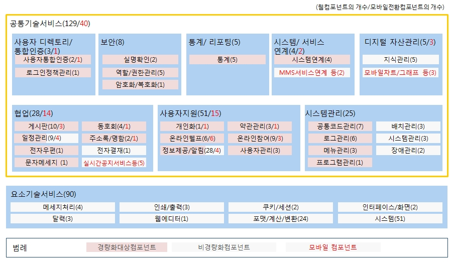

공통컴포넌트 아키텍처 구성
주요개선사항
전자정부 표준프레임워크 2.0 공통컴포넌트의 주요변경사항은 다음과 같습니다.
- 공통컴포넌트 경량화
- - 사용자인증,권한관리,공통코드등 17개 패키지가 포함되어 있던 Common 배포 파일의 경량화
- - 참조 관계 개선 : 인증 및 게시판 관련 컴포넌트의 참조관계를 개선
- - 패키지 구조의 개선 : 여러 컴포넌트들이 하나의 패키지로 통합되어 있던 것을 개별 패키지로 분리
- 공통컴포넌트의 완성도 제고
- - java, jsp, sqlmap 등 소스코드를 구성하는 요소별 디렉터리 경로가 일치하도록 개선
- - 중복 css, image 파일 최소화
- - 컴포넌트 별 테이블 생성 스크립트 제공
- 기타 개선 사항
- - 웹 접근성 개선(K-WAH 3.0)
- - KISA 점검을 통하여 보안 취약점 개선
- - W3C 기준에 맞도록 웹표준 준수
- - 데이터 표준 준수율 제고 : 자료사전과 데이터모델이 일치하도록 개선
- 모바일 공통컴포넌트 추가 개발
- - 모바일 사용자 경험 지원기능을 활용하여 모바일 디바이스에 최적화 된 모바일 공통컴포넌트를 추가
- - 신규 모바일 공통컴포넌트 개발(10종) 및 웹공통컴포넌트를 모바일 전환 개발(30종)
공통컴포넌트 구성
- 공통컴포넌트의 정의
- 공통컴포넌트는 정보시스템 구축시 공통적으로 재사용이 가능한 기능위주로 개발한 컴포넌트의 집합
- 공통컴포넌트는 표준프레임워크 기반으로 실행환경의 MVC아키텍처를 준수하여 설계 및 개발
- 전자정부사업에서 쉽게 커스트마이징하여 재사용할수 있도록 전자정부 표준프레임워크 포털(www.egovframe.go.kr)을 통해 소스코드와 가이드를 제공

- 공통컴포넌트의 종류
- 중복개발의 빈도, 재사용 가능성, 표준화 적용성 등을 고려하여 개발 생산성 및 투자 효율성이 높은 219종을 우선적으로 도출하여 개발
| 구 분 | 상세기능 | |
|---|---|---|
| 공통기술서비스(129종) | 보안 | 실명확인, 권한관리, 암호화/복호화 등 8종 |
| 사용자디렉토리/통합인증 | 일반로그인, 인증서로그인, 로그인정책관리 등 3종 | |
| 사용자 지원 | 사용자관리, 상담관리, 설문관리, FAQ, Q&A 등 56종 | |
| 협업 | 게시판, 동호회관리, 커뮤니티관리, 주소록관리 등 28종 | |
| 시스템 관리 | 공통코드, 메뉴관리, 로그관리, 기관코드수신 등 25종 | |
| 시스템/서비스연계 | 연계현황관리, 연계기관관리 등 4종 | |
| 통계/리포팅 | 게시물통계, 접속통계, 보고서통계 등 5종 | |
| 요소기술서비스(유틸리티)(90종) | 달력, 포맷/계산/변환, 번호유효성/포맷유효성체크 등 90종 | |
* 공통기술서비스 : 전자정부 표준프레임워크 기반에서 동작하는 공통컴포넌트
* 요소기술서비스 : 전자정부 표준프레임워크와 상관없이 일반 자바환경에서 동작하는 공통컴포넌트
* 요소기술서비스 : 전자정부 표준프레임워크와 상관없이 일반 자바환경에서 동작하는 공통컴포넌트
- 모바일 공통컴포넌트의 종류
- 모바일 사용자 경험 지원기능을 활용하여 모바일 디바이스에 최적화 된 모바일 공통컴포넌트를 추가 및 신규 모바일 공통컴포넌트 개발(10종) 및 웹공통컴포넌트를 모바일 전환 개발(30종)
| 구 분 | 상세기능 | |
|---|---|---|
| 공통컴포넌트 전환개발 |
협업 | 게시판(6) : 게시판,공지사항, 유효게시판, 익명게시판, 댓글, 스크랩기능 동호회(3) : 커뮤니티,커뮤니티 방명록, 커뮤니티 사진첩 약관관리(1) : 약관관리 주소록/명함록(1) : 주소록 일정관리(4) : 부서일정관리, 일정관리, 일지관리, 전체일정 |
| 사용자디렉토리 / 통합인증 |
사용자 통합인증(1) : 일반로그인 | |
| 사용자 지원 | 온라인참여(3) : 상담관리, 설문조사, 온라인Poll 온라인헬프(6) : 도움말, 용어사전,FAQ,Q&A, 행정전문용어사전, 온라인매뉴얼 정보제공/알림(4) : 뉴스,사이트맵, 추천사이트, 행사/이벤트/켐페인 개인화(1) : 마이페이지 |
|
| 신규공통컴포넌트 | 모바일 공통기술 | 실시간 공지 서비스, 모바일 차트/그래프, 모바일 사진 앨범, 동기화 서비스 |
| 지원서비스 | 오프라인 웹 서비스, MMS 서비스 연계, OPEN API 연계 서비스 | |
| 모바일기기 지원 | 위치정보연계, 멀티미디어 제어, 모바일 기기식별 | |